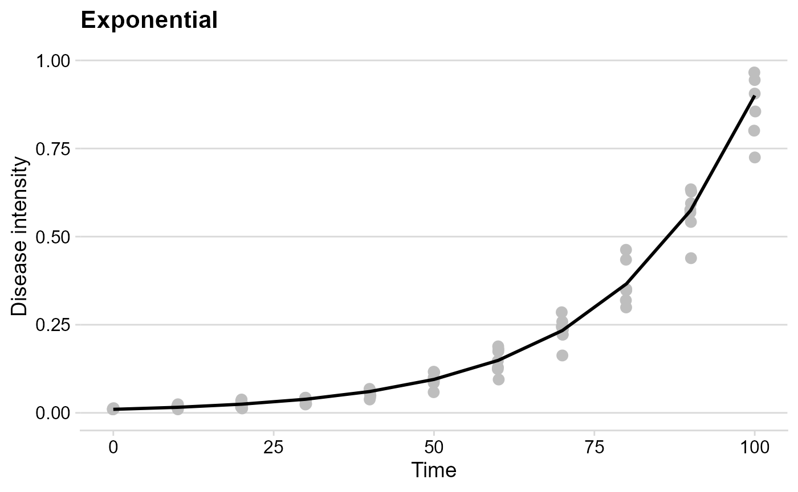
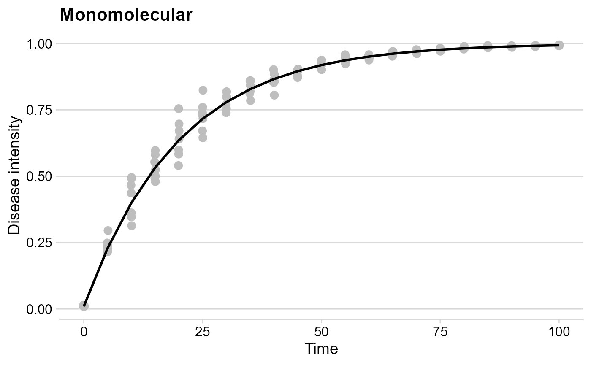
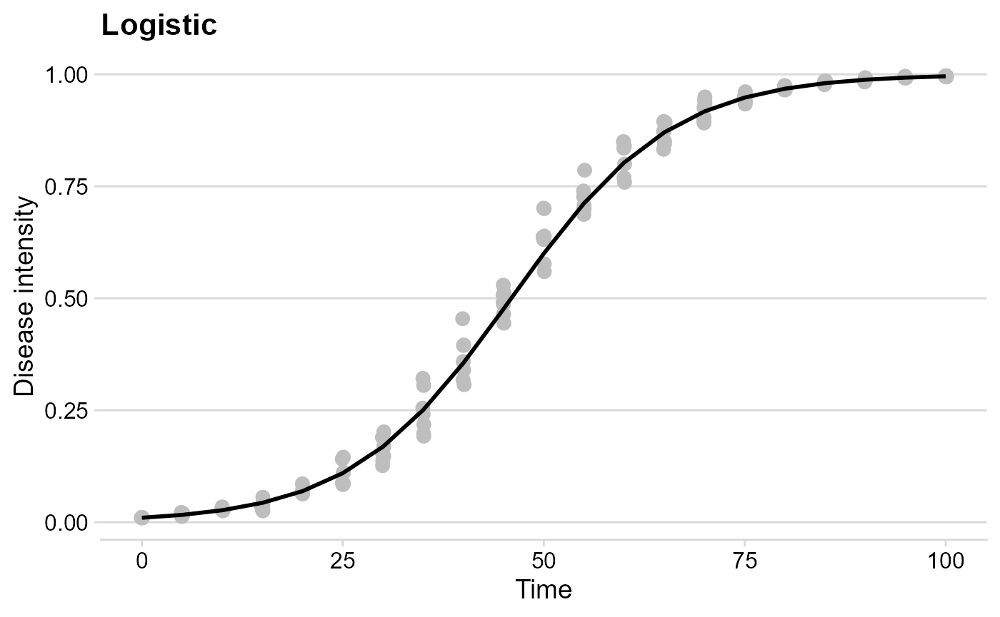
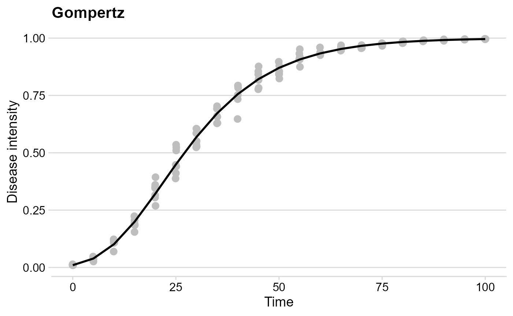
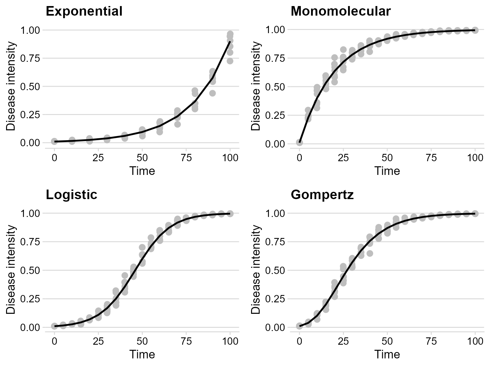

Simulating disease progress curves
Kaique S Alves
2026-02-08
Source:vignettes/simulation.Rmd
simulation.RmdIntroduction
In epiffiter, opposite to the fit_
functions (estimate parameters from fitting models to the data), the
sim_ family of functions allows to produce the DPC data
given a set of parameters for a specific model. Currently, the same four
population dynamic models that are fitted to the data can be
simulated.
The functions use the ode() function of the
devolve package (Soetaert,Petzoldt & Setzer 2010) to
solve the differential equation form of the e epidemiological
models.
Hands On
The basics of the simulation
The sim_ functions, regardless of the model, require the
same set of six arguments. By default, at least two arguments are
required (the others have default values)
-
r: apparent infection rate -
n: number of replicates
When n is greater than one, replicated epidemics
(e.g. replicated treatments) are produced and a level of noise
(experimental error) should be set in the alpha argument.
These two arguments combined set will generate random_y
values, which will vary randomly across the defined number of
replicates.
The other arguments are:
-
N: epidemic duration in time units -
dt: time (fixed) in units between two assessments -
y0: initial inoculum -
alpha: noise parameters for the replicates
Exponential
Let’s simulate a curve resembling the exponential growth.
exp_model <- sim_exponential(
N = 100, # total time units
y0 = 0.01, # initial inoculum
dt = 10, # interval between assessments in time units
r = 0.045, # apparent infection rate
alpha = 0.2,# level of noise
n = 7 # number of replicates
)
head(exp_model)## replicates time y random_y
## 1 1 0 0.01000000 0.01000000
## 2 1 10 0.01568425 0.01648514
## 3 1 20 0.02459905 0.01260818
## 4 1 30 0.03858028 0.03853729
## 5 1 40 0.06050749 0.06802921
## 6 1 50 0.09489670 0.11669280A data.frame object is produced with four columns:
-
replicates: the curve with the respective ID number -
time: the assessment time -
y: the simulated proportion of disease intensity -
random_y: randomly simulated proportion disease intensity based on the noise
Use the ggplot2 package
to build impressive graphics!
exp_plot = exp_model %>%
ggplot(aes(time, y)) +
geom_jitter(aes(time, random_y), size = 3,color = "gray", width = .1) +
geom_line(size = 1) +
theme_minimal_hgrid() +
ylim(0,1)+
labs(
title = "Exponential",
y = "Disease intensity",
x = "Time"
)## Warning: Using `size` aesthetic for lines was deprecated in ggplot2 3.4.0.
## ℹ Please use `linewidth` instead.
## This warning is displayed once per session.
## Call `lifecycle::last_lifecycle_warnings()` to see where this warning was
## generated.
exp_plot## Warning: Removed 1 row containing missing values or values outside the scale range
## (`geom_point()`).
Monomolecular
The logic is exactly the same here.
mono_model <- sim_monomolecular(
N = 100,
y0 = 0.01,
dt = 5,
r = 0.05,
alpha = 0.2,
n = 7
)
head(mono_model)## replicates time y random_y
## 1 1 0 0.0100000 0.01034092
## 2 1 5 0.2289861 0.22579664
## 3 1 10 0.3995322 0.49186456
## 4 1 15 0.5323535 0.59700132
## 5 1 20 0.6357949 0.67047285
## 6 1 25 0.7163551 0.73895902
mono_plot = mono_model %>%
ggplot(aes(time, y)) +
geom_jitter(aes(time, random_y), size = 3, color = "gray", width = .1) +
geom_line(size = 1) +
theme_minimal_hgrid() +
labs(
title = "Monomolecular",
y = "Disease intensity",
x = "Time"
)
mono_plot
The Logistic model
logist_model <- sim_logistic(
N = 100,
y0 = 0.01,
dt = 5,
r = 0.1,
alpha = 0.2,
n = 7
)
head(logist_model)## replicates time y random_y
## 1 1 0 0.01000000 0.01067404
## 2 1 5 0.01638216 0.01485875
## 3 1 10 0.02672677 0.03041405
## 4 1 15 0.04331509 0.03064342
## 5 1 20 0.06946352 0.07253287
## 6 1 25 0.10958806 0.08396757
logist_plot = logist_model %>%
ggplot(aes(time, y)) +
geom_jitter(aes(time, random_y), size = 3,color = "gray", width = .1) +
geom_line(size = 1) +
theme_minimal_hgrid() +
labs(
title = "Logistic",
y = "Disease intensity",
x = "Time"
)
logist_plot
Gompertz
gomp_model <- sim_gompertz(
N = 100,
y0 = 0.01,
dt = 5,
r = 0.07,
alpha = 0.2,
n = 7
)
head(gomp_model)## replicates time y random_y
## 1 1 0 0.01000000 0.0100000
## 2 1 5 0.03896283 0.0475927
## 3 1 10 0.10158896 0.1089836
## 4 1 15 0.19958740 0.1845412
## 5 1 20 0.32122825 0.3154174
## 6 1 25 0.44922018 0.5099217
gomp_plot = gomp_model %>%
ggplot(aes(time, y)) +
geom_jitter(aes(time, random_y), size = 3,color = "gray", width = .1) +
geom_line(size = 1) +
theme_minimal_hgrid() +
labs(
title = "Gompertz",
y = "Disease intensity",
x = "Time"
)
gomp_plot
Combo
Use the function plot_grid() from the cowplot
package to gather all plots into a grid
plot_grid(exp_plot,
mono_plot,
logist_plot,
gomp_plot)## Warning: Removed 1 row containing missing values or values outside the scale range
## (`geom_point()`).
References
Karline Soetaert, Thomas Petzoldt, R. Woodrow Setzer (2010). Solving Differential Equations in R: Package deSolve. Journal of Statistical Software, 33(9), 1–25. DOI: 10.18637/jss.v033.i09